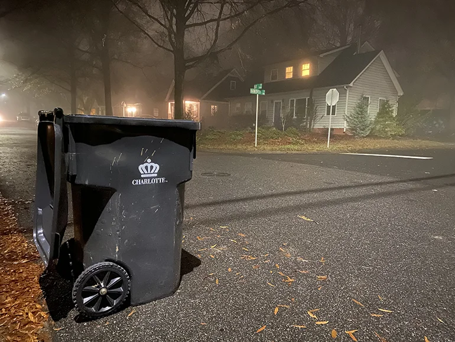

Charlotte
Verde!
Faça a sua parte para reduzir a quantidade de lixo e realize a coleta celetiva de forma eficaz!
Nossa missão é proporcionar ferramentas como mapa dos centros de reciclagem disponiveis no condado de Mecklenburg. Acompanhe um guia de práticas de reciclagem. Faça doações a ONGs da região. Save o planeta!

.
Centros de reciclagem
Nave o mapa para encontrar um centro de reciclagem perto de você!
A cidade de Charlotte não coleta material de obra, ou moveis velhos, para descartar de forma sustentavel é necessário levar o lixo a um centro de reciclagem mais proximo.
Os residentes podem levar seus materiais recicláveis, lixo de obra, jardinagem, eletronicos, óleo lubrificante entre 7 a.m. - 4 p.m. de segunda a sexta.
.
Guia de reciclagem
Tudo que está à nossa volta foi feito de natureza.
Todas as matérias-primas vem de recursos naturais, como minerais, solo, água, florestas ou até mesmo do sol. Assim, garantir a reciclagem do nosso lixo, é honrar as matérias-primas providas pela natureza.
Mas o que é reciclagem?

Nada mais é do que o processo em que há a transformação do resíduo sólido, que não seria aproveitado, atribuindo características para que ele se torne novamente matéria-prima ou produto. Isso é feito por meio de mudanças em seus estados físico, físico-químico ou biológico. A reciclagem faz parte dos três ‘R’s da sustentabilidade, que consistem em: reduzir, reutilizar e reciclar. O que pode ser reciclado? A reciclagem depende de uma cadeia valorizada e desenvolvida.

Como fazer coleta seletiva em casa?
A separação é parte essencial para fazer coleta seletiva em casa! Quanto mais separado por tipos (alumínio, papelão, plásticos, vidro, etc), melhor! O material que você utiliza para embalar o descarte também conta para uma destinação adequada. Embrulhar pilhas em sacos biodegradáveis, por exemplo, é inadequado. Isso porque eles podem se biodegradar antes das pilhas serem recolhidas, o que pode fazer com que elas vazem. Entenda quais são os sacos de lixo para coleta seletiva adequados.
O que a cidade de Charlotte aceita como recicláveis?
Use o lixo verde fornecido pela cidade.
VIDRO - Garrafas de bebidas de vidro, jarros de picles de vidro, potes de conservas de vidroMETAIS - Latas de bebidas, latas de sopa e legumes, papel alumínio
PAPELAO - Caixas de entregas, caixas de cereais, cartelas de ovos, tubos de papelão
GARRAFAS, JARROS, BACIAS E TAMPAS DE PLÁSTICO - Garrafas de bebidas de plástico, recipientes de leite, potes de iogurte, bacias e tampas, embalagens de xampus, garrafas de detergentes Sacos de plástico Materiais recicláveis ensacados Roupas Mangueiras e cordas Sucata de metal
NÃO ACEITAMOS! - Pilhas Talheres e canudinhos de plástico Restos de comida e líquidos Aparelhos eletrônicos Isopor Recipientes de plástico preto de entrega de refeições
.
Centros de Doação
As doações também constroem casas!
Quando você doa seus itens usados com cuidado para algum centro de doação, você está mudando vidas ao tornar a aquisição de uma casa própria acessível uma realidade para uma família em sua própria comunidade! Através da revenda das suas generosas doações, podemos ajudar a financiar a construção e reparação de casas região de Charlotte. Muitos empregos são gerados para separar e vender as doações. Você não está apenas fazendo a diferença localmente, mas também globalmente, evitando que utensílios domésticos com bastante vida sejam desperdiçados desnecessariamente em aterros sanitários!
Navegue o mapa para encontrar o mais proximo de sua residência.
Principais centros de doação:
- Goodwill
- NOSSA MISSÃO E VISÃO A Goodwill é conhecida por ajudar as pessoas a encontrar trabalho. Esse foi o foco da declaração de missão que escrevemos há 50 anos. Mas muita coisa mudou desde então e o que fazemos vai muito além do emprego. Ao longo dos anos, adaptamos nossos serviços para atender às necessidades crescentes de nossa comunidade. Nosso propósito mudou para ajudar as pessoas a ver possibilidades, aproveitar oportunidades e prosperar. E à medida que as nossas aspirações cresceram, acreditamos que a nossa missão, visão e valores devem crescer connosco. Para apoiar o nosso propósito comum, atualizámos recentemente a nossa missão, visão e valores para refletir a posição e o papel da Goodwill na comunidade: criar acesso equitativo a oportunidades de carreira e de desenvolvimento pessoal para todos.
- The Salvation Army
- O Exército de Salvação, um movimento internacional, é uma parte evangélica da Igreja Cristã universal. Sua mensagem é baseada na Bíblia. Seu ministério é motivado pelo amor de Deus. Sua missão é pregar o evangelho de Jesus Cristo e atender às necessidades humanas em Seu nome, sem discriminação.
.

Contato
Você precisa de ajuda? Entre em contato.